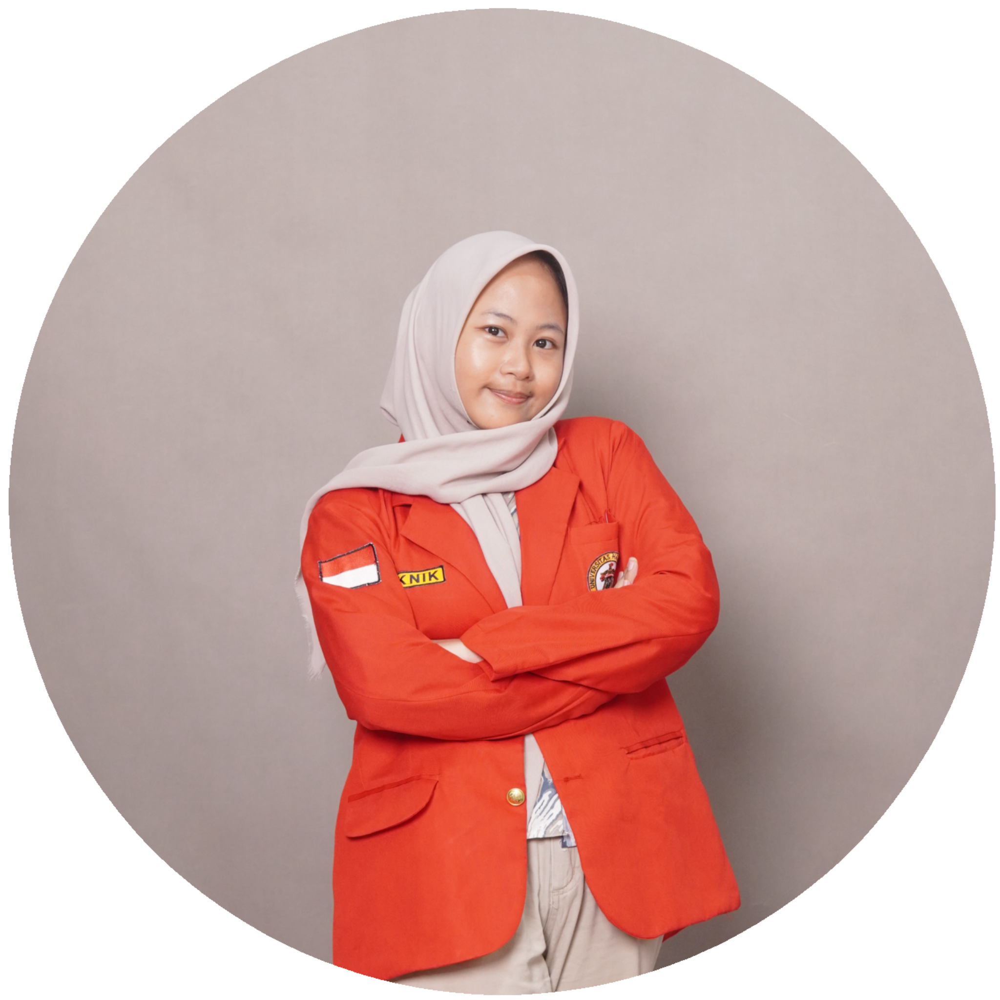
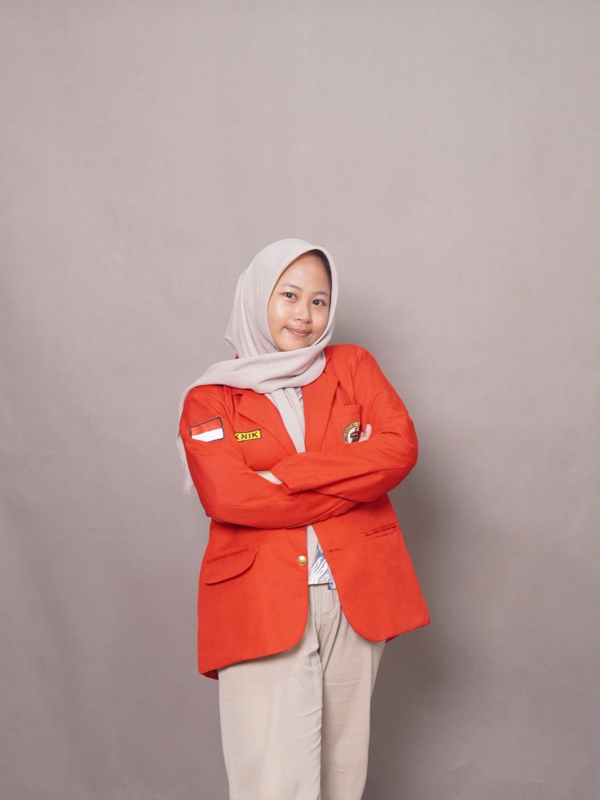

My name is Dinda Nor’aini, and I am usually called Dinda. I am currently pursuing my undergraduate degree at Hasanuddin University, majoring in Informatics Engineering.I have a strong interest in drawing and design. Recently, I have also started learning front-end development, focusing on HTML and CSS as my foundational skills in web development.
I do not consider myself to be particularly smart, cheerful, or highly disciplined. However, I am someone who consistently strives to learn and improve myself every day. I am committed to developing better habits, improving my attitude, and learning how to manage my emotions more effectively.In terms of skills, I have drawing abilities, although I am still in the learning process and have not yet reached an expert level.
As for my future plans, I am still exploring the direction I want to take. Nevertheless, I am determined to pursue a master’s degree abroad, especially in Japan, and to build a career in the field of Information Technology.
Designed and developed a simple personal website
HTML, CSS
Front-End (Beginner)
Social Media